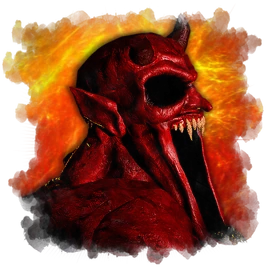
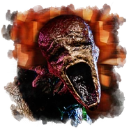
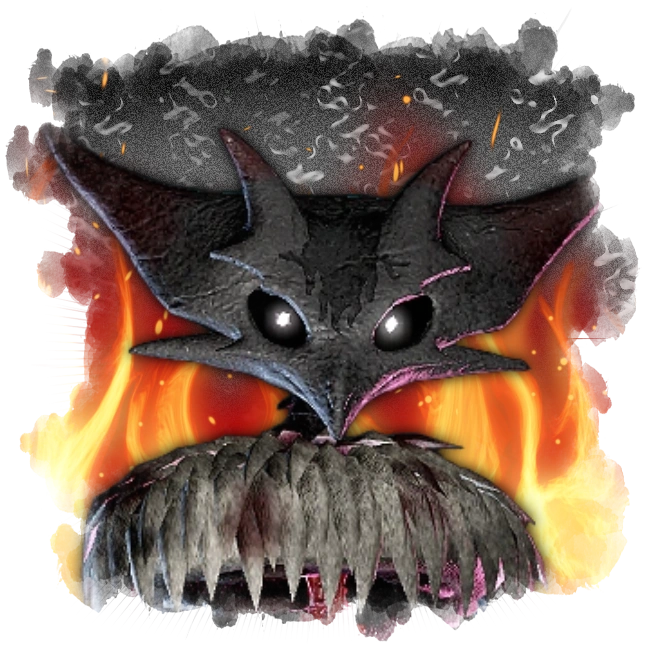
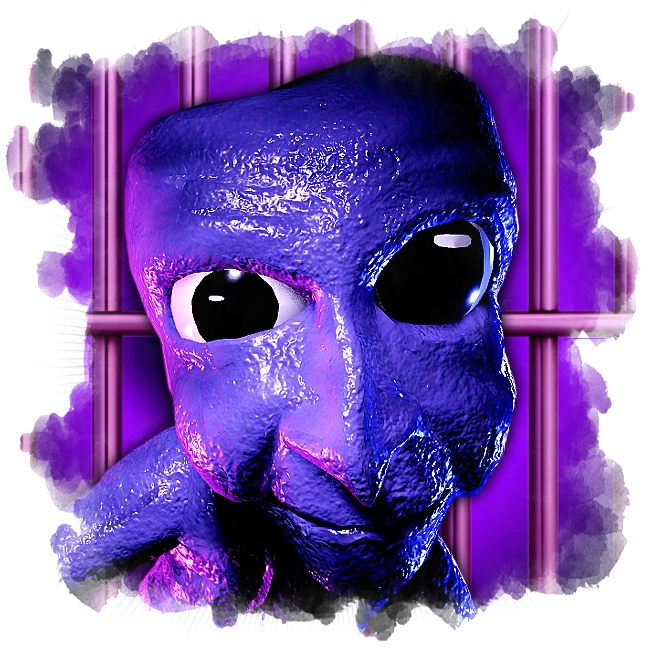
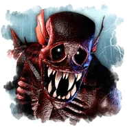
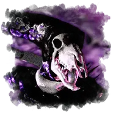

El rol de monstruos es el más difícil de jugar, pero también el más divertido y el que más adrenalina te hará sentir. Como monstruo, tu único objetivo es matar a cuantos supervivientes sean posibles, para así ganar la partida. Para esto, tendrás que usar tus habilidades y estrategia para atrapar a los supervivientes.
Hasta la fecha se tiene pensado incluir a 6 monstruos en el lanzamiento de la actualización, cada uno con sus propias habilidades y características, lo que hace que cada uno tenga una forma diferente de jugar. Es importante conocer las habilidades de cada monstruo para poder usarlas de la mejor manera posible y así aumentar tus chances de ganar la partida.
A continuación, los siguientes monstruos del recode:

VAPOR

ROSEMARY

VALEM

AO ONI

THE FOGBORN

A01